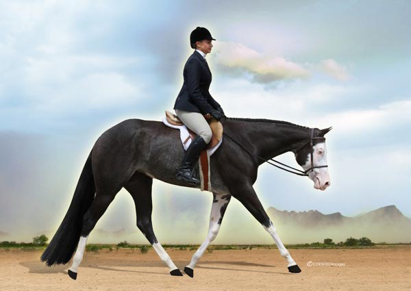
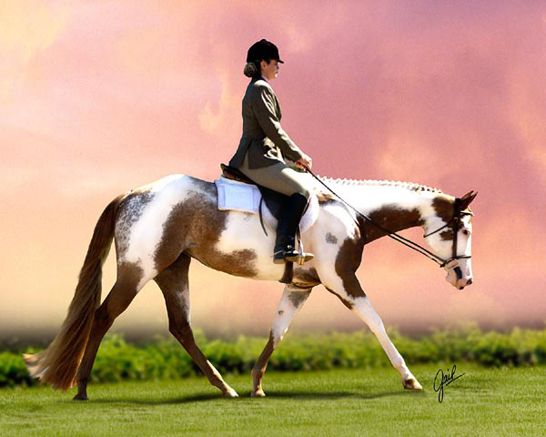
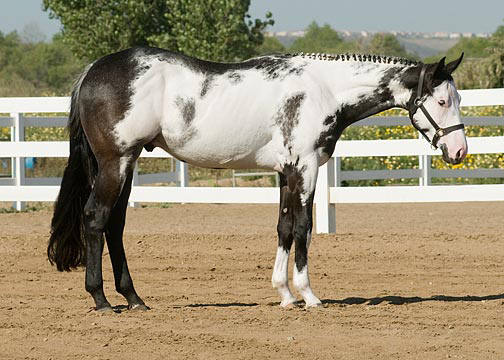

Welcome to the Down The Rail Stock Horses!

As you are driving down a quiet country road you turn off the road on to a paved road that heads up a hill. When you reach the top you see a big iron gate and as you you go through the gates you are greeted by line of fencing. All you see is mounds of grass and you hear the sounds of horses all around you. You look around and you see beautifully colored horses mixed with solid horses. After climbing out of your vehicle you walk through the glass doors into the barn you come across a woman taking a horse out of a stall and you are greeted.
Hello, and welcome to Down The Rail Stock Horses! I'm the owner Tara. I hope you enjoy your visit and I hope I can help you with whatever you need. Let me start off telling to you a little . Our stable colors are Black and Aqua Blue. Here at Down The Rail Stock Horses we are a private stable that specialize in Paints. Some of the disciplines are enjoy here are Hunter Under Saddle, Western Pleasure, Reining, Cutting, Pleasure Driving and various others.
Down The Rail Stock Horses is a private stable located in Blue Coast, Dalton on 100 acres. Some of our facilities include two 40 stall barn each with an attached covered arena and numerous turnout paddocks and pastures for your horse's pleasure. We also have a lot of trails if you want to take a leisurely trail in the woods.
About Our Training Program
We select world-class horses with movement and athletic ability and we breed sensitive, medium types as prospects. We like elegant horses with good temperaments and bloodline. Horse's that we choose are accepted on a "Trial Basis" to determine whether or not the horse will work in our program. Provided that a horse's temperament is willing and generous the horse might be accepted into the Down The Rail Training Program. Not all horses and people work well together and it is important to us that the horses in our program are happy.
Our Stallion
All The Right Moves
16.0 hh 2009 Black Overo Stallion
All The Right Moves is ready to take on the Hunter Under Saddle world, All The Right Moves has the looks and talent to compete at the highest of levels, but is complete with a puppy dog personality. All The Right Moves is always the first to greet you at the barn and is exceptionally kind and affectionate. His flat trot and soft balance combined with his height and coloring makes him stand out in the arena.
Pedigree
| CF Wicked Willie | |
| All Time Fancy | |
| Forced To Be Fancy | |
| IMA Snuffy Gambler | |
| Honey N Blue Jeans | |
| Amazing Miss |
Our Mare
Investment Art
 16.0 hh 2002 Sorrel Overo Mare
Investment Art is a strong willed mare who tries to proclaim dominance on all of those around her. When turned out with the other young horses, Investment Art is constantly chasing and nipping at them. Once she has proved to them daily that she is queen of the paddock, they all settle down to graze and have fun in the sun. When being worked with, Investment Art is constantly pushing the limits, she tosses her head, crow hops, and will even throw out the occasional hoof up front to catch you in the shin. Investment Art will never be described as sweet and gentle.
Pedigree
| Artful Move | |
| Artful Investment | |
| January Investment | |
| Triple Feature | |
| Miss Dolly Bars | |
| Miss Bar Town |
For Sale
Artful Moves
16.0 hh 2012 Bay Overo Colt
Artful Moves is quiet and willing young stallion that has a gorgeous, effortless, flat trot and soft, balanced canter. We can't wait to start Artful Moves under saddle he is going to be phenomenal in the Hunter Under Saddle arena. And we believe that when he's old enough he's going to do great over fences and with his trot he'll make a stellar Pleasure Driving horse.
Pedigree
| CF Wicked Willie | |
| All Time Fancy | |
| Forced To Be Fancy | |
| Artful Investment | |
| Abstract Art | |
| Miss Dolly Bars |